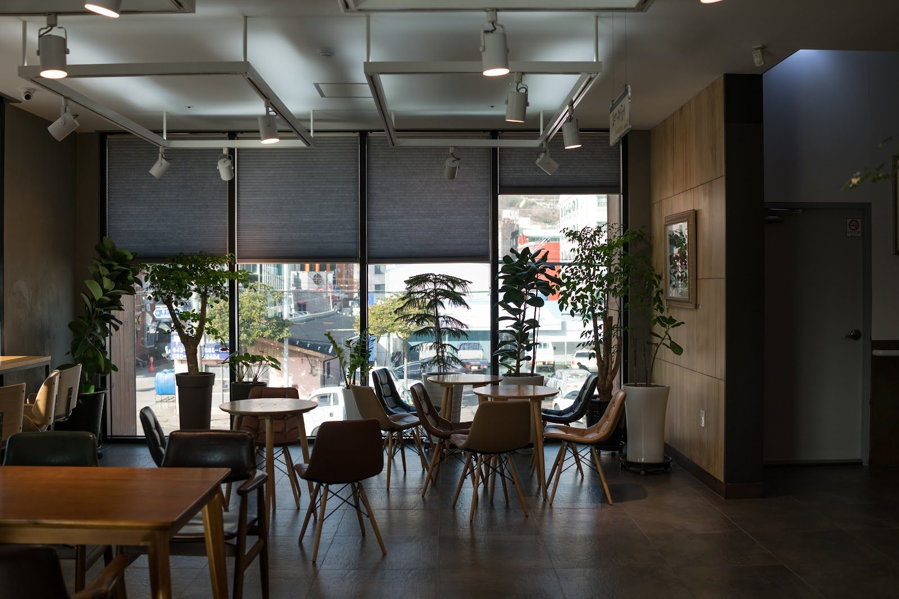

Yeosu · Food
Crab 1st Avenue kkotdol: Yeosu’s Marinated Crab
By Jungsuk Kim, Korea Plainly · Published

Photo: Ro RuleOut via Google Maps
At a glance: This Yeosu restaurant specializes in crab dishes, making it a good stop for trying the city’s much-loved Korean marinated crab.
Visiting Crab 1st Avenue kkotdol
- Region
- Yeosu
- Address
- 36 Bongsan 2-ro, Yeosu, Jeollanam-do
- Google rating
- 4.3/5 from 4,313 reviews (October 2026)
Opening hours, prices and closures change. Check the map before you go.
What it is
Crab 1st Avenue kkotdol is a restaurant in Yeosu’s Bongsan area, known for Korean crab dishes. It’s a strong choice if you want to try gejang: crab cured in a savory marinade, a much-loved specialty along Korea’s southern coast. The two familiar styles are ganjang gejang, marinated in soy sauce, and yangnyeom gejang, coated in a spicy-sweet seasoning.
Yeosu is a coastal city with a deep seafood culture, and crab is one of the dishes many visitors seek out. This restaurant has a Google rating of 4.3 from more than 4,300 reviews, reflecting its popularity with diners. Come ready for a hands-on meal: gejang is eaten with your fingers as well as chopsticks, and getting the meat from the shell is part of the pleasure.
What to order and how to enjoy it
If this is your first time eating gejang, choose the soy-marinated style for a savory, briny introduction. The spicy version offers a bolder seasoning. If you’re dining with others and both are available, sharing gives you a chance to compare them. Menus can change, so check the choices when you arrive.
Gejang is typically enjoyed with rice. Spoon a little of the crab’s flavorful sauce over a bite, then work carefully around the shell to get the meat. The seasoned crab can be intense and salty, so rice helps balance each mouthful. Follow the pace of the table, and don’t worry if you need a moment to figure out how to handle a piece—the technique is easy to pick up as you eat.
Seafood is central to the meal, so check ingredients with the staff if you have a shellfish allergy or dietary restriction. If you’re not accustomed to spicy food, ask which style is milder before ordering. Korean restaurant meals are often shared, but you can also ask about individual portions if you’re eating alone.
Make it part of a Yeosu day
The restaurant is at 36 Bongsan 2-ro, Yeosu, Jeollanam-do. Set aside about an hour for a relaxed meal, especially if you’re new to gejang and want time to enjoy it without rushing. Lunch or an early dinner can fit neatly between sightseeing stops; arriving outside the busiest meal period may make for a calmer visit, though crowds vary by day.
Bongsan is a practical stop to fold into a day around central Yeosu and the waterfront. Pair lunch with a wander through the city’s seafood market area, or make the meal a break before visiting Yi Sun-sin Square and taking in the harbour scenery. Yeosu’s coastal views are especially rewarding as the day winds down, so you can save a waterfront stroll for later.
If you’re travelling with a group, decide whether everyone wants crab before you go: it’s a focused choice for diners who enjoy seafood rather than a general-purpose Korean menu. For a solo traveller, it can still be a memorable meal, but ask what portion options are available when you arrive.
Good to know
The address is easiest to show a taxi driver or enter into a map app as “Crab 1st Avenue kkotdol” or “36 Bongsan 2-ro, Yeosu.” If you use a Korean map app, searching the Korean name, 꽃돌게장1번가, can also help. Check current hours and prices on Naver Map before setting out.
Gejang is a hands-on dish, so keep a napkin nearby and take your time with the shells. If you’re travelling with someone who avoids raw or marinated seafood, confirm what else is available before making this your main meal stop. A little patience—and a bowl of rice—makes the crab easier to enjoy.
FAQ
What is Crab 1st Avenue kkotdol known for?
It’s known for Korean crab dishes, especially gejang, or crab marinated in soy sauce or a seasoned sauce.
Is this a good place to try gejang for the first time?
Yes, if you enjoy seafood and are comfortable eating crab by hand. The soy-marinated style is a straightforward place to start; ask the staff about the available choices.
Where is the restaurant?
It’s at 36 Bongsan 2-ro in Yeosu, Jeollanam-do, in the Bongsan area.